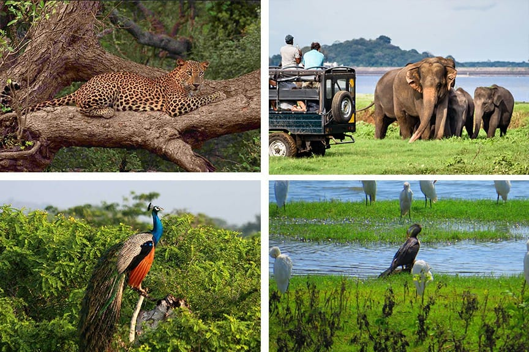
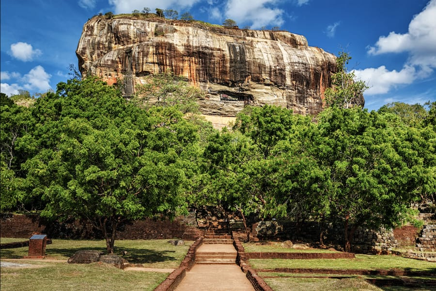
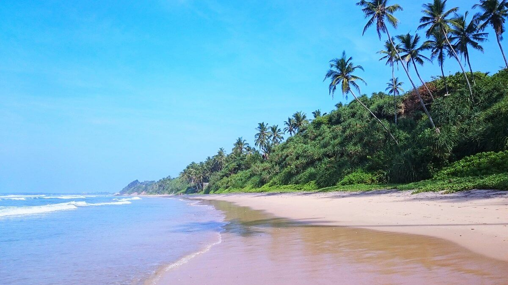

Yala National Park
Yala is Sri Lanka’s most famous wildlife sanctuary, known for its diverse animals and stunning landscapes.
Highlights & Activities:
- Go on a jeep safari to spot leopards and elephants
- Birdwatching with over 200 species
- Explore scenic lagoons and grasslands

Sigiriya Rock Fortress
Sigiriya, also called the Lion Rock, is an ancient rock fortress and UNESCO World Heritage Site.
Highlights & Activities:
- Climb the rock and enjoy breathtaking views
- See the famous Sigiriya frescoes
- Walk through the water and boulder gardens

Beachside Matara
Matara, located in southern Sri Lanka, offers peaceful beaches, cultural landmarks, and ocean views.
Highlights & Activities:
- Relax at Polhena Beach and enjoy snorkeling
- Visit Matara Fort and old Dutch architecture
- Sunset walks along the Indian Ocean coast